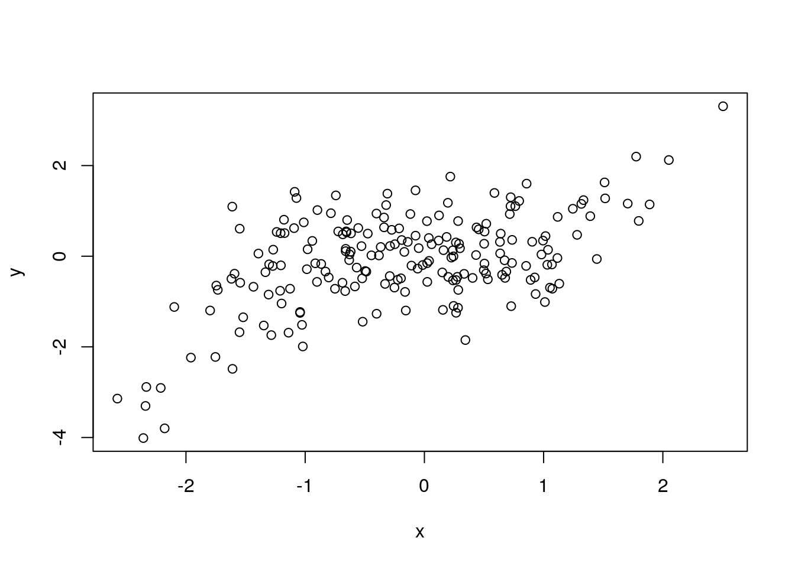
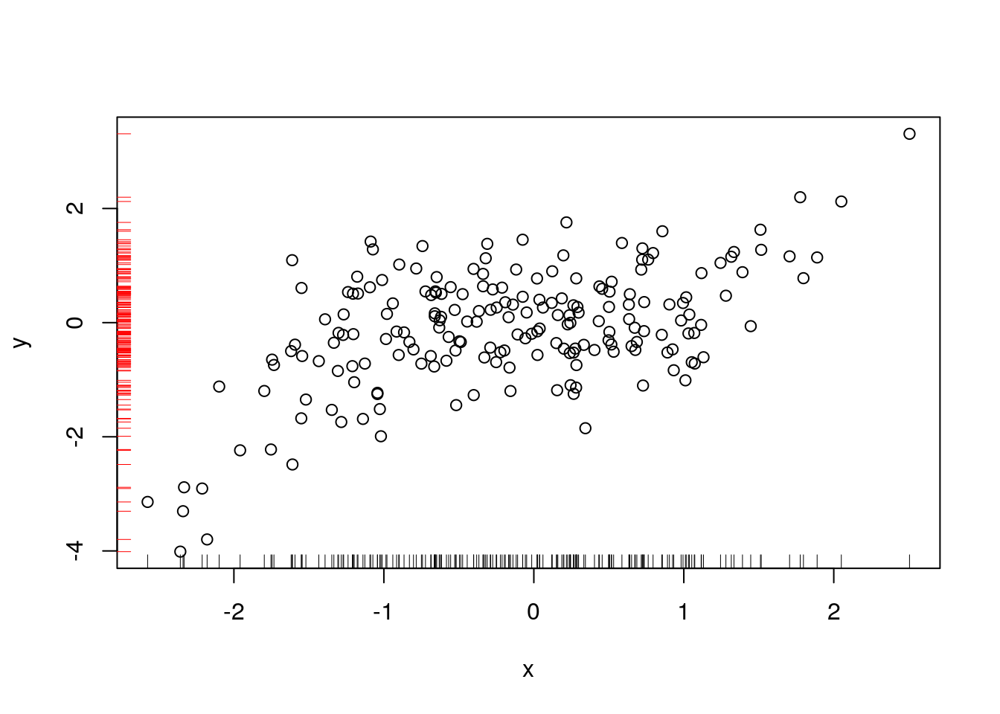
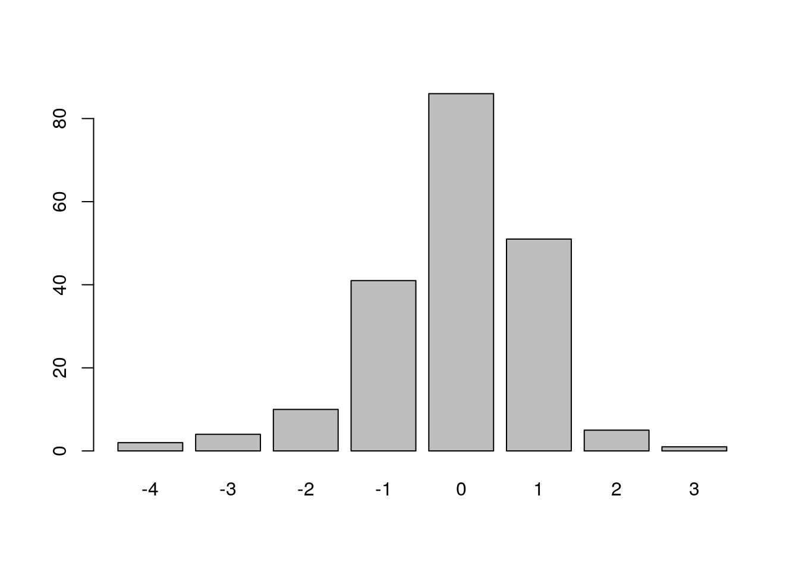

Chapter 14 Introduction to R Plots
(Introduction to R plots)
14.1 Overview
14.1.1 Abstract:
Introductory concepts and exercises for creating graphics with R.
14.1.2 Objectives:
This unit will:
- introduce concepts of graphics for data visualization and descrptive statistics;
- teach basic plotting methods;
14.1.3 Outcomes:
After working through this unit you:
- know where to find models of good data visualization;
- can create and customize basic plots in R;
14.1.4 Deliverables:
Time management: Before you begin, estimate how long it will take you to complete this unit. Then, record in your course journal: the number of hours you estimated, the number of hours you worked on the unit, and the amount of time that passed between start and completion of this unit.
Journal: Document your progress in your Course Journal. Some tasks may ask you to include specific items in your journal. Don’t overlook these.
Insights: If you find something particularly noteworthy about this unit, make a note in your insights! page.
14.1.5 Prerequisites
Read the introductory notes on graphics in R, and some concepts of graphics for descriptive statistics. Load the R-Exercise_BasicSetup project in RStudio if you don’t already have it open. Type init() as instructed after the project has loaded. Work through the plottingIntro.R script.
14.2 Types of plots
This lists the generic plots only. Many more specialized plot-types are available.
- plot()
- pie()
- hist()
- stripchart()
- stem()
- barplot()
- boxplot()
14.2.1 plot()
?plot# generate some data to plot
x <- rnorm(200)
y <- x^3 * 0.25 + rnorm(200, 0, 0.75)
?plot
# standard scatterplot
plot(x,y)
plot(x,y)
# Add a rug representation:
rug(x)
rug(y, side=2, col="red")
14.2.2 barplot()
?barplot
barplot(table(round(y)))
14.2.3 hist()
?hist
set.seed(12357)
x <- rnorm(50)
hist(x, breaks=5)
hist(x, breaks=5)
# add a stripchart() of the actual values
stripchart(x, pch="|", add=TRUE, col="red3", xlim=c(-3, 3), at=-0.5)
Note: a similar plot for bivarite data is achieved with the rug() function.
assigning the output of hist() makes the values used in constructing the histogram accessible:
info <- hist(x, breaks=5)
info## $breaks
## [1] -3 -2 -1 0 1 2 3
##
## $counts
## [1] 1 7 21 10 10 1
##
## $density
## [1] 0.02 0.14 0.42 0.20 0.20 0.02
##
## $mids
## [1] -2.5 -1.5 -0.5 0.5 1.5 2.5
##
## $xname
## [1] "x"
##
## $equidist
## [1] TRUE
##
## attr(,"class")
## [1] "histogram"we can explicitly set breakpoints in a vector: * here we set them at 0.5 sigma intervals from -3 to 3
s <- 1.0
hist(x, breaks=seq(-3*s, 3*s, by=0.5*s))
# we can colour the bars individually...
hcol <- c("#4F47FD", "#6982FC", "#8AA6EF", "#AFBBDB", "#BEBEBE", "#A9A9A9",
"#A9A9A9", "#BEBEBE", "#DBBBAF", "#EFA68A", "#FC8269", "#FD474F")
# Most parameters of a generic plot apply.
h <- hist(x, breaks=seq(-3*s, 3*s, by=0.5*s),
col=hcol,
main="",
xlab=expression(sigma),
ylab="Counts")
# ... and we can add the individual counts to the plot.
text(h$mids, h$counts, h$counts, adj = c(0.5, -0.5), col = hcol)
14.2.4 boxplot
?boxplot
x <- rnorm(200)
boxplot(x)
m <- x
m <- cbind(m, x^2)
m <- cbind(m, x^3)
m <- cbind(m, x^4)
m <- cbind(m, x^5)
boxplot(m)
boxplot(log(abs(m)))
14.2.5 Colour
Colours can be specified by number, by name, as hex-triplets as rgb or hsv values, and through colour palettes.
14.2.5.1 Colours by number
The col=… parameter for plots is 1 by default and you can set it to the range 0:8.
- 0: white
- 1: black (the default)
- 2: red
- 3: green
- 4: blue
- 5: cyan
- 6: magenta
- 7: yellow
- 8: grey
barplot(rep(1,9), col=0:8, axes=FALSE, names.arg=c(0:8))
As you can see, these primary colours are decidedly garish and offend even the most rudimentary sense of aesthetics. Fortunately there are much more sophisticated ways to define colours in R.
14.2.5.2 2.2 Colours by name
You may have noticed that “red”, “green”, and “blue” work for the col=… parameter, but you probably would not have imagined that “peachpuff”, “firebrick” and “goldenrod” are valid as well. In fact, there are 657 named colours in R. Access them all by typing:
colors()## [1] "white" "aliceblue" "antiquewhite"
## [4] "antiquewhite1" "antiquewhite2" "antiquewhite3"
## [7] "antiquewhite4" "aquamarine" "aquamarine1"
## [10] "aquamarine2" "aquamarine3" "aquamarine4"
## [13] "azure" "azure1" "azure2"
## [16] "azure3" "azure4" "beige"
## [19] "bisque" "bisque1" "bisque2"
## [22] "bisque3" "bisque4" "black"
## [25] "blanchedalmond" "blue" "blue1"
## [28] "blue2" "blue3" "blue4"
## [31] "blueviolet" "brown" "brown1"
## [34] "brown2" "brown3" "brown4"
## [37] "burlywood" "burlywood1" "burlywood2"
## [40] "burlywood3" "burlywood4" "cadetblue"
## [43] "cadetblue1" "cadetblue2" "cadetblue3"
## [46] "cadetblue4" "chartreuse" "chartreuse1"
## [49] "chartreuse2" "chartreuse3" "chartreuse4"
## [52] "chocolate" "chocolate1" "chocolate2"
## [55] "chocolate3" "chocolate4" "coral"
## [58] "coral1" "coral2" "coral3"
## [61] "coral4" "cornflowerblue" "cornsilk"
## [64] "cornsilk1" "cornsilk2" "cornsilk3"
## [67] "cornsilk4" "cyan" "cyan1"
## [70] "cyan2" "cyan3" "cyan4"
## [73] "darkblue" "darkcyan" "darkgoldenrod"
## [76] "darkgoldenrod1" "darkgoldenrod2" "darkgoldenrod3"
## [79] "darkgoldenrod4" "darkgray" "darkgreen"
## [82] "darkgrey" "darkkhaki" "darkmagenta"
## [85] "darkolivegreen" "darkolivegreen1" "darkolivegreen2"
## [88] "darkolivegreen3" "darkolivegreen4" "darkorange"
## [91] "darkorange1" "darkorange2" "darkorange3"
## [94] "darkorange4" "darkorchid" "darkorchid1"
## [97] "darkorchid2" "darkorchid3" "darkorchid4"
## [100] "darkred" "darksalmon" "darkseagreen"
## [103] "darkseagreen1" "darkseagreen2" "darkseagreen3"
## [106] "darkseagreen4" "darkslateblue" "darkslategray"
## [109] "darkslategray1" "darkslategray2" "darkslategray3"
## [112] "darkslategray4" "darkslategrey" "darkturquoise"
## [115] "darkviolet" "deeppink" "deeppink1"
## [118] "deeppink2" "deeppink3" "deeppink4"
## [121] "deepskyblue" "deepskyblue1" "deepskyblue2"
## [124] "deepskyblue3" "deepskyblue4" "dimgray"
## [127] "dimgrey" "dodgerblue" "dodgerblue1"
## [130] "dodgerblue2" "dodgerblue3" "dodgerblue4"
## [133] "firebrick" "firebrick1" "firebrick2"
## [136] "firebrick3" "firebrick4" "floralwhite"
## [139] "forestgreen" "gainsboro" "ghostwhite"
## [142] "gold" "gold1" "gold2"
## [145] "gold3" "gold4" "goldenrod"
## [148] "goldenrod1" "goldenrod2" "goldenrod3"
## [151] "goldenrod4" "gray" "gray0"
## [154] "gray1" "gray2" "gray3"
## [157] "gray4" "gray5" "gray6"
## [160] "gray7" "gray8" "gray9"
## [163] "gray10" "gray11" "gray12"
## [166] "gray13" "gray14" "gray15"
## [169] "gray16" "gray17" "gray18"
## [172] "gray19" "gray20" "gray21"
## [175] "gray22" "gray23" "gray24"
## [178] "gray25" "gray26" "gray27"
## [181] "gray28" "gray29" "gray30"
## [184] "gray31" "gray32" "gray33"
## [187] "gray34" "gray35" "gray36"
## [190] "gray37" "gray38" "gray39"
## [193] "gray40" "gray41" "gray42"
## [196] "gray43" "gray44" "gray45"
## [199] "gray46" "gray47" "gray48"
## [202] "gray49" "gray50" "gray51"
## [205] "gray52" "gray53" "gray54"
## [208] "gray55" "gray56" "gray57"
## [211] "gray58" "gray59" "gray60"
## [214] "gray61" "gray62" "gray63"
## [217] "gray64" "gray65" "gray66"
## [220] "gray67" "gray68" "gray69"
## [223] "gray70" "gray71" "gray72"
## [226] "gray73" "gray74" "gray75"
## [229] "gray76" "gray77" "gray78"
## [232] "gray79" "gray80" "gray81"
## [235] "gray82" "gray83" "gray84"
## [238] "gray85" "gray86" "gray87"
## [241] "gray88" "gray89" "gray90"
## [244] "gray91" "gray92" "gray93"
## [247] "gray94" "gray95" "gray96"
## [250] "gray97" "gray98" "gray99"
## [253] "gray100" "green" "green1"
## [256] "green2" "green3" "green4"
## [259] "greenyellow" "grey" "grey0"
## [262] "grey1" "grey2" "grey3"
## [265] "grey4" "grey5" "grey6"
## [268] "grey7" "grey8" "grey9"
## [271] "grey10" "grey11" "grey12"
## [274] "grey13" "grey14" "grey15"
## [277] "grey16" "grey17" "grey18"
## [280] "grey19" "grey20" "grey21"
## [283] "grey22" "grey23" "grey24"
## [286] "grey25" "grey26" "grey27"
## [289] "grey28" "grey29" "grey30"
## [292] "grey31" "grey32" "grey33"
## [295] "grey34" "grey35" "grey36"
## [298] "grey37" "grey38" "grey39"
## [301] "grey40" "grey41" "grey42"
## [304] "grey43" "grey44" "grey45"
## [307] "grey46" "grey47" "grey48"
## [310] "grey49" "grey50" "grey51"
## [313] "grey52" "grey53" "grey54"
## [316] "grey55" "grey56" "grey57"
## [319] "grey58" "grey59" "grey60"
## [322] "grey61" "grey62" "grey63"
## [325] "grey64" "grey65" "grey66"
## [328] "grey67" "grey68" "grey69"
## [331] "grey70" "grey71" "grey72"
## [334] "grey73" "grey74" "grey75"
## [337] "grey76" "grey77" "grey78"
## [340] "grey79" "grey80" "grey81"
## [343] "grey82" "grey83" "grey84"
## [346] "grey85" "grey86" "grey87"
## [349] "grey88" "grey89" "grey90"
## [352] "grey91" "grey92" "grey93"
## [355] "grey94" "grey95" "grey96"
## [358] "grey97" "grey98" "grey99"
## [361] "grey100" "honeydew" "honeydew1"
## [364] "honeydew2" "honeydew3" "honeydew4"
## [367] "hotpink" "hotpink1" "hotpink2"
## [370] "hotpink3" "hotpink4" "indianred"
## [373] "indianred1" "indianred2" "indianred3"
## [376] "indianred4" "ivory" "ivory1"
## [379] "ivory2" "ivory3" "ivory4"
## [382] "khaki" "khaki1" "khaki2"
## [385] "khaki3" "khaki4" "lavender"
## [388] "lavenderblush" "lavenderblush1" "lavenderblush2"
## [391] "lavenderblush3" "lavenderblush4" "lawngreen"
## [394] "lemonchiffon" "lemonchiffon1" "lemonchiffon2"
## [397] "lemonchiffon3" "lemonchiffon4" "lightblue"
## [400] "lightblue1" "lightblue2" "lightblue3"
## [403] "lightblue4" "lightcoral" "lightcyan"
## [406] "lightcyan1" "lightcyan2" "lightcyan3"
## [409] "lightcyan4" "lightgoldenrod" "lightgoldenrod1"
## [412] "lightgoldenrod2" "lightgoldenrod3" "lightgoldenrod4"
## [415] "lightgoldenrodyellow" "lightgray" "lightgreen"
## [418] "lightgrey" "lightpink" "lightpink1"
## [421] "lightpink2" "lightpink3" "lightpink4"
## [424] "lightsalmon" "lightsalmon1" "lightsalmon2"
## [427] "lightsalmon3" "lightsalmon4" "lightseagreen"
## [430] "lightskyblue" "lightskyblue1" "lightskyblue2"
## [433] "lightskyblue3" "lightskyblue4" "lightslateblue"
## [436] "lightslategray" "lightslategrey" "lightsteelblue"
## [439] "lightsteelblue1" "lightsteelblue2" "lightsteelblue3"
## [442] "lightsteelblue4" "lightyellow" "lightyellow1"
## [445] "lightyellow2" "lightyellow3" "lightyellow4"
## [448] "limegreen" "linen" "magenta"
## [451] "magenta1" "magenta2" "magenta3"
## [454] "magenta4" "maroon" "maroon1"
## [457] "maroon2" "maroon3" "maroon4"
## [460] "mediumaquamarine" "mediumblue" "mediumorchid"
## [463] "mediumorchid1" "mediumorchid2" "mediumorchid3"
## [466] "mediumorchid4" "mediumpurple" "mediumpurple1"
## [469] "mediumpurple2" "mediumpurple3" "mediumpurple4"
## [472] "mediumseagreen" "mediumslateblue" "mediumspringgreen"
## [475] "mediumturquoise" "mediumvioletred" "midnightblue"
## [478] "mintcream" "mistyrose" "mistyrose1"
## [481] "mistyrose2" "mistyrose3" "mistyrose4"
## [484] "moccasin" "navajowhite" "navajowhite1"
## [487] "navajowhite2" "navajowhite3" "navajowhite4"
## [490] "navy" "navyblue" "oldlace"
## [493] "olivedrab" "olivedrab1" "olivedrab2"
## [496] "olivedrab3" "olivedrab4" "orange"
## [499] "orange1" "orange2" "orange3"
## [502] "orange4" "orangered" "orangered1"
## [505] "orangered2" "orangered3" "orangered4"
## [508] "orchid" "orchid1" "orchid2"
## [511] "orchid3" "orchid4" "palegoldenrod"
## [514] "palegreen" "palegreen1" "palegreen2"
## [517] "palegreen3" "palegreen4" "paleturquoise"
## [520] "paleturquoise1" "paleturquoise2" "paleturquoise3"
## [523] "paleturquoise4" "palevioletred" "palevioletred1"
## [526] "palevioletred2" "palevioletred3" "palevioletred4"
## [529] "papayawhip" "peachpuff" "peachpuff1"
## [532] "peachpuff2" "peachpuff3" "peachpuff4"
## [535] "peru" "pink" "pink1"
## [538] "pink2" "pink3" "pink4"
## [541] "plum" "plum1" "plum2"
## [544] "plum3" "plum4" "powderblue"
## [547] "purple" "purple1" "purple2"
## [550] "purple3" "purple4" "red"
## [553] "red1" "red2" "red3"
## [556] "red4" "rosybrown" "rosybrown1"
## [559] "rosybrown2" "rosybrown3" "rosybrown4"
## [562] "royalblue" "royalblue1" "royalblue2"
## [565] "royalblue3" "royalblue4" "saddlebrown"
## [568] "salmon" "salmon1" "salmon2"
## [571] "salmon3" "salmon4" "sandybrown"
## [574] "seagreen" "seagreen1" "seagreen2"
## [577] "seagreen3" "seagreen4" "seashell"
## [580] "seashell1" "seashell2" "seashell3"
## [583] "seashell4" "sienna" "sienna1"
## [586] "sienna2" "sienna3" "sienna4"
## [589] "skyblue" "skyblue1" "skyblue2"
## [592] "skyblue3" "skyblue4" "slateblue"
## [595] "slateblue1" "slateblue2" "slateblue3"
## [598] "slateblue4" "slategray" "slategray1"
## [601] "slategray2" "slategray3" "slategray4"
## [604] "slategrey" "snow" "snow1"
## [607] "snow2" "snow3" "snow4"
## [610] "springgreen" "springgreen1" "springgreen2"
## [613] "springgreen3" "springgreen4" "steelblue"
## [616] "steelblue1" "steelblue2" "steelblue3"
## [619] "steelblue4" "tan" "tan1"
## [622] "tan2" "tan3" "tan4"
## [625] "thistle" "thistle1" "thistle2"
## [628] "thistle3" "thistle4" "tomato"
## [631] "tomato1" "tomato2" "tomato3"
## [634] "tomato4" "turquoise" "turquoise1"
## [637] "turquoise2" "turquoise3" "turquoise4"
## [640] "violet" "violetred" "violetred1"
## [643] "violetred2" "violetred3" "violetred4"
## [646] "wheat" "wheat1" "wheat2"
## [649] "wheat3" "wheat4" "whitesmoke"
## [652] "yellow" "yellow1" "yellow2"
## [655] "yellow3" "yellow4" "yellowgreen"pie(c(1, 1, 2, 3, 5, 8, 13),
col=c(
"firebrick2",
"tomato",
"goldenrod1",
"peachpuff",
"papayawhip",
"seashell",
"whitesmoke"
)
)
Read more about named colours (and related topics) here
14.2.5.3 Colours as hex-triplets
Hex triplets in R work exactly as in HTML: a triplet of RGB values in two-digit hexadecimal representation. The first two digits specify the red value, the second two are for green, then blue. R accepts a fourth pair of digits to optionally specify the transparency, the semantics of the code is thus “#RRGGBB” or “#RRGGBBAA”. Read more e.g. at http://en.wikipedia.org/wiki/Web_colors
# The function col2rgb() converts colour names to rgb values ...
col2rgb("violetred")## [,1]
## red 208
## green 32
## blue 144# ... and rgb() converts rgb values to hex-code:
rgb(1, 0.5, 0.23)## [1] "#FF803B"Unfortunately the output of col2rgb does not quite match rgb(). col2rgb creates rows with values between 0 and 255, and rgb by default expects columns with intensities from 0 to 1, you have to transpose and divide.
rgb(t(col2rgb("red"))/255) # "#FF0000"## [1] "#FF0000"rgb(t(col2rgb("peachpuff"))/255) # "#FFDAB9"## [1] "#FFDAB9"There are many tools on the Web that help to generate pleasing palettes.
Here is an example -“Creative Cloud”- taken from https://kuler.adobe.com/
CC <- c("#011640", "#024059", "#F2F0D0", "#BE6C5C", "#8C3037" )
hist(rnorm(1000), breaks=20 , col=CC)
R colours are actually specified as quartets: the fourth value the “Alpha channel” defines the transparency. Setting this to values other than “FF” (the default) can be useful for very crowded plots, or for creating overlays.
x <- rnorm(2000)
y <- x^3 * 0.25 + rnorm(2000, 0, 0.75)compare:
plot(x,y, pch = 19, col = "#EE3A8C")
And
plot(x,y, pch = 19, col = "#EE3A8C12") # Alpha at ~ 10%
or with multiple overlays of varying size using points() …
plot( x,y, pch = 16, cex = 1, col = "#AA330009")
plot(x,y, pch = 19, cex = 2, col = "#44558803")
plot(x,y, pch = 20, cex = 0.5, col = "#EE3A8C08")
A similar behaviour can be obtained from “density adapted colors with the densCols() function
plot (x, y, col = densCols(x, y), pch = 19, cex = 1.5)
14.2.6 Colour palettes
R has several inbuilt colour palettes, or you can build your own.
# Inbuilt palettes
?rainbow- view the palettes
opar <- par(mfrow=c(3,2))
n <- 20
sq <- rep(1, n)
barplot(sq, col=rainbow(n), axes=F, main="rainbow(n)")
barplot(sq, col=cm.colors(n), axes=F, main="cm.colors(n)")
barplot(sq, col=topo.colors(n), axes=F, main="topo.colors(n)")
barplot(sq, col=terrain.colors(n), axes=F, main="terrain.colors(n)")
barplot(sq, col=heat.colors(n), axes=F, main="heat.colors(n)")
par <- opar
Useful palettes have also been described specifically for cartography. http://colorbrewer2.org/ has palettes for seqential and qualitative diferences, and options for colourblind-safe and photocopy friendly palettes. You can use them via an R package:
if (!require(RColorBrewer, quietly=TRUE)) {
install.packages("RColorBrewer")
library(RColorBrewer)
}
display.brewer.all()
Here, we apply a Brewer palette to a Voronoi tesselation of a point set.
if (!require(deldir, quietly=TRUE)) {
install.packages("deldir")
library(deldir)
}## deldir 0.1-23Create a point set along a logarithmic spiral, with a bit of added noise.
li <- 0.1
n <- 45
dl <- 1.06
ncirc <- 13
da <- (2*pi)/ncirc
fnoise <-0.13create a matrix of points
x <- numeric(n)
x <- cbind(x, numeric(n))
set.seed(16180)
for (i in 1:n) {
l <- li * (dl^(i-1))
x[i,1] <- (l+(rnorm(1)*fnoise*l)) * cos((i-1)*da)
x[i,2] <- (l+(rnorm(1)*fnoise*l)) * sin((i-1)*da)
}
plot(x[,1], x[,2])
ts <- deldir(x[,1], x[,2]) # calculate the tesselation##
## PLEASE NOTE: The components "delsgs" and "summary" of the
## object returned by deldir() are now DATA FRAMES rather than
## matrices (as they were prior to release 0.0-18).
## See help("deldir").
##
## PLEASE NOTE: The process that deldir() uses for determining
## duplicated points has changed from that used in version
## 0.0-9 of this package (and previously). See help("deldir").tl <- tile.list(ts) # calculate the list of tiles
plot.tile.list(tl) # plot it
Let’s colour the cells by distance from a defined point using a Brewer palette
plot.tile.list(tl) # plot it
points(x[25,1], x[25,2], pch=20, col="red") # pick a point
vec <- c(x[25,1], x[25,2]) # define a pointdefine a function for Euclidian distance
vDist <- function(x,v) { sqrt(sum((x-v)^2)) } # calculates Euclidian distance
d <- apply(x, 1 , vDist, v=vec) # apply this to the point set
dCol <- floor(((d-min(d))/(max(d)-min(d)) * 10)) + 1 # map d into 10 intervals
dCol[which(dCol>10)] <- 10 # demote the largest one
pal <- brewer.pal(10, "RdGy") # create the palette
# plot the tesselation, colour by palette
plot.tile.list(tl, fillcol = pal[dCol], cex=0.8, pch=20, col.pts="slategrey")
14.3 Lines ===============================================================
Basically all plots take arguments lty to define the line type, and lwd to define line width
# empty plot ...
plot(c(0,10), c(0,10), type = "n", axes = FALSE, xlab = "", ylab = "")
# Line type
for (i in 1:8) {
y <- 10.5-(i/2)
segments(1,y,5,y, lty=i)
text(6, y, paste("lty = ", i), col="grey60", adj=0, cex=0.75)
}
# Line width
for (i in 1:10) {
y <- 5.5-(i/2)
segments(1,y,5,y, lwd=(0.3*i)^2)
text(6, y, paste("lwd = ", (0.3*i)^2), col="grey60", adj=0, cex=0.75)
}
14.4 Axes
# For Details, see:
?plot.defaultn <- 1000
x <- rnorm(n)
y <- x^3 * 0.25 + rnorm(n, sd=0.75)
plot(x,y) # Default
plot(x,y, xlim=c(-4, 4)) # fixed limits
plot(x,y, xlim=c(-4, 4), ylim=c(10, -10)) # reverse is possible
plot(x,y, log="xy") # log axes## Warning in xy.coords(x, y, xlabel, ylabel, log): 498 x values <= 0 omitted from
## logarithmic plot## Warning in xy.coords(x, y, xlabel, ylabel, log): 484 y values <= 0 omitted from
## logarithmic plot
The axis parameters in the default plot are limited. If you want more control, suppress the printing of an axis in the plot and use the axis() function instead.
?axis# Axis-labels and title are straightforward parameters of plot
plot(x,y, xlab="rnorm(n)",
ylab="x^3 * 0.25 + rnorm(n, sd=0.75)",
cex.main=1.3,
main="Sample\nPlot",
cex.sub=0.75,
col.sub="grey",
sub="Scatterplot of noisy 3d-degree polynomial"
)
Add gridlines
?grid
plot(x,y, xlab="rnorm(n)",
ylab="x^3 * 0.25 + rnorm(n, sd=0.75)",
cex.main=1.3,
main="Sample\nPlot",
cex.sub=0.75,
col.sub="grey",
sub="Scatterplot of noisy 3d-degree polynomial"
)
grid()
14.5 Layout
14.5.1 par, lattice, constant aspect ratio
Most parameters of the plot window can be set via the functions plot(), hist() etc., but some need to be set via the par() function. Calling par() without arguments lists the current state of the plotting parameters. Calling it with arguments, returns the old parameters and sets new parameters. Thus setting new parameters and saving the old ones can be done in one step. The parameters that have to be set via
par include:
- multiple plots in one window (mfrow, mfcol, mfg)
- margin layout (mai, mar mex, oma, omd, omi)
- controlling position and size of a plot in the figure (fig, plt, ps, pty)
- see ?par for details.
n <- 1000
x <- rnorm(n)
y <- x^3 * 0.25 + rnorm(n, sd=0.75)# set window background and plotting axes via par
opar <- par(bg="steelblue", fg="lightyellow")
# set axis lables and titles via plot parameters
plot(x,y, col.axis="lightyellow", col.lab="lightyellow")
par(opar) # rest to old values
plot(x,y) # confirm reset
14.6 Plot symbols and text
Plot symbols are defined in the pch argument to plot(). id 1:20 are regular symbols
# Empty plot frame ...
plot(c(0,10), c(0,10), type = "n", axes = FALSE, xlab = "", ylab = "")
# coordinates for first 25 symbols
x1 <- rep(0.5:9.5, 2)[1:20]
y1 <- sort(rep(9.5:8.5, 10), dec=TRUE)[1:20]
points(x1, y1, pch=1:20)
# Empty plot frame ...
plot(c(0,10), c(0,10), type = "n", axes = FALSE, xlab = "", ylab = "")
# id 21:25 can have different border and fill colours
x2 <- 0.5:4.5
y2 <- rep(7.5,5)
points(x2, y2, pch=21:25, col="slategrey", bg=rainbow(5))
# Empty plot frame ...
plot(c(0,10), c(0,10), type = "n", axes = FALSE, xlab = "", ylab = "")
# ten extra symbols are defined as characters
x3 <- 0.5:9.5
y3 <- rep(6.5,10)
extra = c(".", "o", "O", "0","a","A", "*", "+","-","|")
points(x3, y3, pch=extra) # note: ext is a character vector
# Empty plot frame ...
plot(c(0,10), c(0,10), type = "n", axes = FALSE, xlab = "", ylab = "")
# The ASCII codes for characters 32 to 126 can also be used as plotting symbols
x4 <- rep(seq(0.5,9.5,0.5), 5)[1:96]
y4 <- sort(rep(5.5:0.5, 19), dec=TRUE)[1:96]
points(x4, y4, pch=32:126, col="navyblue")
Plotting arbitrary text use the text() function to plot characters and strings to coordinates
?text# Empty plot frame ...
plot(c(0,10), c(0,10), type = "n", axes = FALSE, xlab = "", ylab = "")
# Example: add labels to the symbols
# first set: plain symbols (1 to 20)
text(x1-0.4, y1, paste(1:20), cex=0.75)
# symbols with separate background (21 to 25)
text(x2-0.4, y2, paste(21:25), cex=0.75)
# third set: special characters, change font for clarity
text(x3-0.4, y3, extra, col="slateblue", cex=0.75, vfont=c("serif", "plain"))
a large set of Hershey vector fonts is available which gives access to many more plotting and labeling options via text()
demo(Hershey)##
##
## demo(Hershey)
## ---- ~~~~~~~
##
## > # Copyright (C) 2003-2009 The R Core Team
## >
## > #### --- Hershey Vector Fonts ---
## >
## > require(grDevices); require(graphics)
##
## > ######
## > # create tables of vector font functionality
## > ######
## > make.table <- function(nr, nc) {
## + savepar <- par(mar=rep(0, 4), pty="s")
## + plot(c(0, nc*2 + 1), c(0, -(nr + 1)),
## + type="n", xlab="", ylab="", axes=FALSE)
## + invisible(savepar)
## + }
##
## > get.r <- function(i, nr) i %% nr + 1
##
## > get.c <- function(i, nr) i %/% nr + 1
##
## > draw.title <- function(title, i = 0, nr, nc) {
## + r <- get.r(i, nr)
## + c <- get.c(i, nr)
## + text((nc*2 + 1)/2, 0, title, font=2)
## + }
##
## > draw.sample.cell <- function(typeface, fontindex, string, i, nr) {
## + r <- get.r(i, nr)
## + c <- get.c(i, nr)
## + text(2*(c - 1) + 1, -r, paste(typeface, fontindex))
## + text(2*c, -r, string, vfont=c(typeface, fontindex), cex=1.5)
## + rect(2*(c - 1) + .5, -(r - .5), 2*c + .5, -(r + .5), border="grey")
## + }
##
## > draw.vf.cell <- function(typeface, fontindex, string, i, nr, raw.string=NULL) {
## + r <- get.r(i, nr)
## + c <- get.c(i, nr)
## + if (is.null(raw.string))
## + raw.string <- paste("\\", string, sep="")
## + text(2*(c - 1) + 1, -r, raw.string, col="grey")
## + text(2*c, -r, string, vfont=c(typeface, fontindex))
## + rect(2*(c - 1) + .5, -(r - .5), (2*c + .5), -(r + .5), border="grey")
## + }
##
## > nr <- 23
##
## > nc <- 1
##
## > oldpar <- make.table(nr, nc)
##
## > i <- 0
##
## > draw.title("Sample 'a' for each available font", i, nr, nc)
##
## > draw.sample.cell("serif", "plain", "a", i, nr); i <- i + 1
##
## > draw.sample.cell("serif", "italic", "a", i, nr); i <- i + 1
##
## > draw.sample.cell("serif", "bold", "a", i, nr); i <- i + 1
##
## > draw.sample.cell("serif", "bold italic", "a", i, nr); i <- i + 1
##
## > draw.sample.cell("serif", "cyrillic", "\301", i, nr); i <- i + 1
##
## > draw.sample.cell("serif", "oblique cyrillic", "\301", i, nr); i <- i + 1
##
## > draw.sample.cell("serif", "EUC", "a", i, nr); i <- i + 1
##
## > draw.sample.cell("sans serif", "plain", "a", i, nr); i <- i + 1
##
## > draw.sample.cell("sans serif", "italic", "a", i, nr); i <- i + 1
##
## > draw.sample.cell("sans serif", "bold", "a", i, nr); i <- i + 1
##
## > draw.sample.cell("sans serif", "bold italic", "a", i, nr); i <- i + 1
##
## > draw.sample.cell("script", "plain", "a", i, nr); i <- i + 1
##
## > draw.sample.cell("script", "italic", "a", i, nr); i <- i + 1
##
## > draw.sample.cell("script", "bold", "a", i, nr); i <- i + 1
##
## > draw.sample.cell("gothic english", "plain", "a", i, nr); i <- i + 1
##
## > draw.sample.cell("gothic german", "plain", "a", i, nr); i <- i + 1
##
## > draw.sample.cell("gothic italian", "plain", "a", i, nr); i <- i + 1
##
## > draw.sample.cell("serif symbol", "plain", "a", i, nr); i <- i + 1
##
## > draw.sample.cell("serif symbol", "italic", "a", i, nr); i <- i + 1
##
## > draw.sample.cell("serif symbol", "bold", "a", i, nr); i <- i + 1
##
## > draw.sample.cell("serif symbol", "bold italic", "a", i, nr); i <- i + 1
##
## > draw.sample.cell("sans serif symbol", "plain", "a", i, nr); i <- i + 1
##
## > draw.sample.cell("sans serif symbol", "italic", "a", i, nr); i <- i + 1
##
## > nr <- 25
##
## > nc <- 6
##
## > tf <- "serif"
##
## > fi <- "plain"
##
## > make.table(nr, nc)
##
## > i <- 0
##
## > draw.title("Symbol (incl. Greek) Escape Sequences", i, nr, nc)
##
## > ## Greek alphabet in order
## > draw.vf.cell(tf, fi, "\\*A", i, nr); i<-i+1; { "Alpha"}
## [1] "Alpha"
##
## > draw.vf.cell(tf, fi, "\\*B", i, nr); i<-i+1; { "Beta"}
## [1] "Beta"
##
## > draw.vf.cell(tf, fi, "\\*G", i, nr); i<-i+1; { "Gamma"}
## [1] "Gamma"
##
## > draw.vf.cell(tf, fi, "\\*D", i, nr); i<-i+1; { "Delta"}
## [1] "Delta"
##
## > draw.vf.cell(tf, fi, "\\*E", i, nr); i<-i+1; { "Epsilon"}
## [1] "Epsilon"
##
## > draw.vf.cell(tf, fi, "\\*Z", i, nr); i<-i+1; { "Zeta"}
## [1] "Zeta"
##
## > draw.vf.cell(tf, fi, "\\*Y", i, nr); i<-i+1; { "Eta"}
## [1] "Eta"
##
## > draw.vf.cell(tf, fi, "\\*H", i, nr); i<-i+1; { "Theta"}
## [1] "Theta"
##
## > draw.vf.cell(tf, fi, "\\*I", i, nr); i<-i+1; { "Iota"}
## [1] "Iota"
##
## > draw.vf.cell(tf, fi, "\\*K", i, nr); i<-i+1; { "Kappa"}
## [1] "Kappa"
##
## > draw.vf.cell(tf, fi, "\\*L", i, nr); i<-i+1; { "Lambda"}
## [1] "Lambda"
##
## > draw.vf.cell(tf, fi, "\\*M", i, nr); i<-i+1; { "Mu"}
## [1] "Mu"
##
## > draw.vf.cell(tf, fi, "\\*N", i, nr); i<-i+1; { "Nu"}
## [1] "Nu"
##
## > draw.vf.cell(tf, fi, "\\*C", i, nr); i<-i+1; { "Xi"}
## [1] "Xi"
##
## > draw.vf.cell(tf, fi, "\\*O", i, nr); i<-i+1; { "Omicron"}
## [1] "Omicron"
##
## > draw.vf.cell(tf, fi, "\\*P", i, nr); i<-i+1; { "Pi"}
## [1] "Pi"
##
## > draw.vf.cell(tf, fi, "\\*R", i, nr); i<-i+1; { "Rho"}
## [1] "Rho"
##
## > draw.vf.cell(tf, fi, "\\*S", i, nr); i<-i+1; { "Sigma"}
## [1] "Sigma"
##
## > draw.vf.cell(tf, fi, "\\*T", i, nr); i<-i+1; { "Tau"}
## [1] "Tau"
##
## > draw.vf.cell(tf, fi, "\\*U", i, nr); i<-i+1; { "Upsilon"}
## [1] "Upsilon"
##
## > draw.vf.cell(tf, fi, "\\+U", i, nr); i<-i+1; { "Upsilon1"}
## [1] "Upsilon1"
##
## > draw.vf.cell(tf, fi, "\\*F", i, nr); i<-i+1; { "Phi"}
## [1] "Phi"
##
## > draw.vf.cell(tf, fi, "\\*X", i, nr); i<-i+1; { "Chi"}
## [1] "Chi"
##
## > draw.vf.cell(tf, fi, "\\*Q", i, nr); i<-i+1; { "Psi"}
## [1] "Psi"
##
## > draw.vf.cell(tf, fi, "\\*W", i, nr); i<-i+1; { "Omega"}
## [1] "Omega"
##
## > #
## > draw.vf.cell(tf, fi, "\\*a", i, nr); i<-i+1; { "alpha"}
## [1] "alpha"
##
## > draw.vf.cell(tf, fi, "\\*b", i, nr); i<-i+1; { "beta"}
## [1] "beta"
##
## > draw.vf.cell(tf, fi, "\\*g", i, nr); i<-i+1; { "gamma"}
## [1] "gamma"
##
## > draw.vf.cell(tf, fi, "\\*d", i, nr); i<-i+1; { "delta"}
## [1] "delta"
##
## > draw.vf.cell(tf, fi, "\\*e", i, nr); i<-i+1; { "epsilon"}
## [1] "epsilon"
##
## > draw.vf.cell(tf, fi, "\\*z", i, nr); i<-i+1; { "zeta"}
## [1] "zeta"
##
## > draw.vf.cell(tf, fi, "\\*y", i, nr); i<-i+1; { "eta"}
## [1] "eta"
##
## > draw.vf.cell(tf, fi, "\\*h", i, nr); i<-i+1; { "theta"}
## [1] "theta"
##
## > draw.vf.cell(tf, fi, "\\+h", i, nr); i<-i+1; { "theta1"}
## [1] "theta1"
##
## > draw.vf.cell(tf, fi, "\\*i", i, nr); i<-i+1; { "iota"}
## [1] "iota"
##
## > draw.vf.cell(tf, fi, "\\*k", i, nr); i<-i+1; { "kappa"}
## [1] "kappa"
##
## > draw.vf.cell(tf, fi, "\\*l", i, nr); i<-i+1; { "lambda"}
## [1] "lambda"
##
## > draw.vf.cell(tf, fi, "\\*m", i, nr); i<-i+1; { "mu"}
## [1] "mu"
##
## > draw.vf.cell(tf, fi, "\\*n", i, nr); i<-i+1; { "nu"}
## [1] "nu"
##
## > draw.vf.cell(tf, fi, "\\*c", i, nr); i<-i+1; { "xi"}
## [1] "xi"
##
## > draw.vf.cell(tf, fi, "\\*o", i, nr); i<-i+1; { "omicron"}
## [1] "omicron"
##
## > draw.vf.cell(tf, fi, "\\*p", i, nr); i<-i+1; { "pi"}
## [1] "pi"
##
## > draw.vf.cell(tf, fi, "\\*r", i, nr); i<-i+1; { "rho"}
## [1] "rho"
##
## > draw.vf.cell(tf, fi, "\\*s", i, nr); i<-i+1; { "sigma"}
## [1] "sigma"
##
## > draw.vf.cell(tf, fi, "\\ts", i, nr); i<-i+1; { "sigma1"}
## [1] "sigma1"
##
## > draw.vf.cell(tf, fi, "\\*t", i, nr); i<-i+1; { "tau"}
## [1] "tau"
##
## > draw.vf.cell(tf, fi, "\\*u", i, nr); i<-i+1; { "upsilon"}
## [1] "upsilon"
##
## > draw.vf.cell(tf, fi, "\\*f", i, nr); i<-i+1; { "phi"}
## [1] "phi"
##
## > draw.vf.cell(tf, fi, "\\+f", i, nr); i<-i+1; { "phi1"}
## [1] "phi1"
##
## > draw.vf.cell(tf, fi, "\\*x", i, nr); i<-i+1; { "chi"}
## [1] "chi"
##
## > draw.vf.cell(tf, fi, "\\*q", i, nr); i<-i+1; { "psi"}
## [1] "psi"
##
## > draw.vf.cell(tf, fi, "\\*w", i, nr); i<-i+1; { "omega"}
## [1] "omega"
##
## > draw.vf.cell(tf, fi, "\\+p", i, nr); i<-i+1; { "omega1"}
## [1] "omega1"
##
## > #
## > draw.vf.cell(tf, fi, "\\fa", i, nr); i<-i+1; { "universal"}
## [1] "universal"
##
## > draw.vf.cell(tf, fi, "\\te", i, nr); i<-i+1; { "existential"}
## [1] "existential"
##
## > draw.vf.cell(tf, fi, "\\st", i, nr); i<-i+1; { "suchthat"}
## [1] "suchthat"
##
## > draw.vf.cell(tf, fi, "\\**", i, nr); i<-i+1; { "asteriskmath"}
## [1] "asteriskmath"
##
## > draw.vf.cell(tf, fi, "\\=~", i, nr); i<-i+1; { "congruent"}
## [1] "congruent"
##
## > draw.vf.cell(tf, fi, "\\tf", i, nr); i<-i+1; { "therefore"}
## [1] "therefore"
##
## > draw.vf.cell(tf, fi, "\\pp", i, nr); i<-i+1; { "perpendicular"}
## [1] "perpendicular"
##
## > draw.vf.cell(tf, fi, "\\ul", i, nr); i<-i+1; { "underline"}
## [1] "underline"
##
## > draw.vf.cell(tf, fi, "\\rx", i, nr); i<-i+1; { "radicalex"}
## [1] "radicalex"
##
## > draw.vf.cell(tf, fi, "\\ap", i, nr); i<-i+1; { "similar"}
## [1] "similar"
##
## > draw.vf.cell(tf, fi, "\\fm", i, nr); i<-i+1; { "minute"}
## [1] "minute"
##
## > draw.vf.cell(tf, fi, "\\<=", i, nr); i<-i+1; { "lessequal"}
## [1] "lessequal"
##
## > draw.vf.cell(tf, fi, "\\f/", i, nr); i<-i+1; { "fraction"}
## [1] "fraction"
##
## > draw.vf.cell(tf, fi, "\\if", i, nr); i<-i+1; { "infinity"}
## [1] "infinity"
##
## > draw.vf.cell(tf, fi, "\\Fn", i, nr); i<-i+1; { "florin"}
## [1] "florin"
##
## > draw.vf.cell(tf, fi, "\\CL", i, nr); i<-i+1; { "club"}
## [1] "club"
##
## > draw.vf.cell(tf, fi, "\\DI", i, nr); i<-i+1; { "diamond"}
## [1] "diamond"
##
## > draw.vf.cell(tf, fi, "\\HE", i, nr); i<-i+1; { "heart"}
## [1] "heart"
##
## > draw.vf.cell(tf, fi, "\\SP", i, nr); i<-i+1; { "spade"}
## [1] "spade"
##
## > draw.vf.cell(tf, fi, "\\<>", i, nr); i<-i+1; { "arrowboth"}
## [1] "arrowboth"
##
## > draw.vf.cell(tf, fi, "\\<-", i, nr); i<-i+1; { "arrowleft"}
## [1] "arrowleft"
##
## > draw.vf.cell(tf, fi, "\\ua", i, nr); i<-i+1; { "arrowup"}
## [1] "arrowup"
##
## > draw.vf.cell(tf, fi, "\\->", i, nr); i<-i+1; { "arrowright"}
## [1] "arrowright"
##
## > draw.vf.cell(tf, fi, "\\da", i, nr); i<-i+1; { "arrowdown"}
## [1] "arrowdown"
##
## > draw.vf.cell(tf, fi, "\\de", i, nr); i<-i+1; { "degree"}
## [1] "degree"
##
## > draw.vf.cell(tf, fi, "\\+-", i, nr); i<-i+1; { "plusminus"}
## [1] "plusminus"
##
## > draw.vf.cell(tf, fi, "\\sd", i, nr); i<-i+1; { "second"}
## [1] "second"
##
## > draw.vf.cell(tf, fi, "\\>=", i, nr); i<-i+1; { "greaterequal"}
## [1] "greaterequal"
##
## > draw.vf.cell(tf, fi, "\\mu", i, nr); i<-i+1; { "multiply"}
## [1] "multiply"
##
## > draw.vf.cell(tf, fi, "\\pt", i, nr); i<-i+1; { "proportional"}
## [1] "proportional"
##
## > draw.vf.cell(tf, fi, "\\pd", i, nr); i<-i+1; { "partialdiff"}
## [1] "partialdiff"
##
## > draw.vf.cell(tf, fi, "\\bu", i, nr); i<-i+1; { "bullet"}
## [1] "bullet"
##
## > draw.vf.cell(tf, fi, "\\di", i, nr); i<-i+1; { "divide"}
## [1] "divide"
##
## > draw.vf.cell(tf, fi, "\\!=", i, nr); i<-i+1; { "notequal"}
## [1] "notequal"
##
## > draw.vf.cell(tf, fi, "\\==", i, nr); i<-i+1; { "equivalence"}
## [1] "equivalence"
##
## > draw.vf.cell(tf, fi, "\\~~", i, nr); i<-i+1; { "approxequal"}
## [1] "approxequal"
##
## > draw.vf.cell(tf, fi, "\\..", i, nr); i<-i+1; { "ellipsis"}
## [1] "ellipsis"
##
## > draw.vf.cell(tf, fi, "\\an", i, nr); i<-i+1; { "arrowhorizex"}
## [1] "arrowhorizex"
##
## > draw.vf.cell(tf, fi, "\\CR", i, nr); i<-i+1; { "carriagereturn"}
## [1] "carriagereturn"
##
## > draw.vf.cell(tf, fi, "\\Ah", i, nr); i<-i+1; { "aleph"}
## [1] "aleph"
##
## > draw.vf.cell(tf, fi, "\\Im", i, nr); i<-i+1; { "Ifraktur"}
## [1] "Ifraktur"
##
## > draw.vf.cell(tf, fi, "\\Re", i, nr); i<-i+1; { "Rfraktur"}
## [1] "Rfraktur"
##
## > draw.vf.cell(tf, fi, "\\wp", i, nr); i<-i+1; { "weierstrass"}
## [1] "weierstrass"
##
## > draw.vf.cell(tf, fi, "\\c*", i, nr); i<-i+1; { "circlemultiply"}
## [1] "circlemultiply"
##
## > draw.vf.cell(tf, fi, "\\c+", i, nr); i<-i+1; { "circleplus"}
## [1] "circleplus"
##
## > draw.vf.cell(tf, fi, "\\es", i, nr); i<-i+1; { "emptyset"}
## [1] "emptyset"
##
## > draw.vf.cell(tf, fi, "\\ca", i, nr); i<-i+1; { "cap"}
## [1] "cap"
##
## > draw.vf.cell(tf, fi, "\\cu", i, nr); i<-i+1; { "cup"}
## [1] "cup"
##
## > draw.vf.cell(tf, fi, "\\SS", i, nr); i<-i+1; { "superset"}
## [1] "superset"
##
## > draw.vf.cell(tf, fi, "\\ip", i, nr); i<-i+1; { "reflexsuperset"}
## [1] "reflexsuperset"
##
## > draw.vf.cell(tf, fi, "\\n<", i, nr); i<-i+1; { "notsubset"}
## [1] "notsubset"
##
## > draw.vf.cell(tf, fi, "\\SB", i, nr); i<-i+1; { "subset"}
## [1] "subset"
##
## > draw.vf.cell(tf, fi, "\\ib", i, nr); i<-i+1; { "reflexsubset"}
## [1] "reflexsubset"
##
## > draw.vf.cell(tf, fi, "\\mo", i, nr); i<-i+1; { "element"}
## [1] "element"
##
## > draw.vf.cell(tf, fi, "\\nm", i, nr); i<-i+1; { "notelement"}
## [1] "notelement"
##
## > draw.vf.cell(tf, fi, "\\/_", i, nr); i<-i+1; { "angle"}
## [1] "angle"
##
## > draw.vf.cell(tf, fi, "\\gr", i, nr); i<-i+1; { "nabla"}
## [1] "nabla"
##
## > draw.vf.cell(tf, fi, "\\rg", i, nr); i<-i+1; { "registerserif"}
## [1] "registerserif"
##
## > draw.vf.cell(tf, fi, "\\co", i, nr); i<-i+1; { "copyrightserif"}
## [1] "copyrightserif"
##
## > draw.vf.cell(tf, fi, "\\tm", i, nr); i<-i+1; { "trademarkserif"}
## [1] "trademarkserif"
##
## > draw.vf.cell(tf, fi, "\\PR", i, nr); i<-i+1; { "product"}
## [1] "product"
##
## > draw.vf.cell(tf, fi, "\\sr", i, nr); i<-i+1; { "radical"}
## [1] "radical"
##
## > draw.vf.cell(tf, fi, "\\md", i, nr); i<-i+1; { "dotmath"}
## [1] "dotmath"
##
## > draw.vf.cell(tf, fi, "\\no", i, nr); i<-i+1; { "logicalnot"}
## [1] "logicalnot"
##
## > draw.vf.cell(tf, fi, "\\AN", i, nr); i<-i+1; { "logicaland"}
## [1] "logicaland"
##
## > draw.vf.cell(tf, fi, "\\OR", i, nr); i<-i+1; { "logicalor"}
## [1] "logicalor"
##
## > draw.vf.cell(tf, fi, "\\hA", i, nr); i<-i+1; { "arrowdblboth"}
## [1] "arrowdblboth"
##
## > draw.vf.cell(tf, fi, "\\lA", i, nr); i<-i+1; { "arrowdblleft"}
## [1] "arrowdblleft"
##
## > draw.vf.cell(tf, fi, "\\uA", i, nr); i<-i+1; { "arrowdblup"}
## [1] "arrowdblup"
##
## > draw.vf.cell(tf, fi, "\\rA", i, nr); i<-i+1; { "arrowdblright"}
## [1] "arrowdblright"
##
## > draw.vf.cell(tf, fi, "\\dA", i, nr); i<-i+1; { "arrowdbldown"}
## [1] "arrowdbldown"
##
## > draw.vf.cell(tf, fi, "\\lz", i, nr); i<-i+1; { "lozenge"}
## [1] "lozenge"
##
## > draw.vf.cell(tf, fi, "\\la", i, nr); i<-i+1; { "angleleft"}
## [1] "angleleft"
##
## > draw.vf.cell(tf, fi, "\\RG", i, nr); i<-i+1; { "registersans"}
## [1] "registersans"
##
## > draw.vf.cell(tf, fi, "\\CO", i, nr); i<-i+1; { "copyrightsans"}
## [1] "copyrightsans"
##
## > draw.vf.cell(tf, fi, "\\TM", i, nr); i<-i+1; { "trademarksans"}
## [1] "trademarksans"
##
## > draw.vf.cell(tf, fi, "\\SU", i, nr); i<-i+1; { "summation"}
## [1] "summation"
##
## > draw.vf.cell(tf, fi, "\\lc", i, nr); i<-i+1; { "bracketlefttp"}
## [1] "bracketlefttp"
##
## > draw.vf.cell(tf, fi, "\\lf", i, nr); i<-i+1; { "bracketleftbt"}
## [1] "bracketleftbt"
##
## > draw.vf.cell(tf, fi, "\\ra", i, nr); i<-i+1; { "angleright"}
## [1] "angleright"
##
## > draw.vf.cell(tf, fi, "\\is", i, nr); i<-i+1; { "integral"}
## [1] "integral"
##
## > draw.vf.cell(tf, fi, "\\rc", i, nr); i<-i+1; { "bracketrighttp"}
## [1] "bracketrighttp"
##
## > draw.vf.cell(tf, fi, "\\rf", i, nr); i<-i+1; { "bracketrightbt"}
## [1] "bracketrightbt"
##
## > draw.vf.cell(tf, fi, "\\~=", i, nr); i<-i+1; { "congruent"}
## [1] "congruent"
##
## > draw.vf.cell(tf, fi, "\\pr", i, nr); i<-i+1; { "minute"}
## [1] "minute"
##
## > draw.vf.cell(tf, fi, "\\in", i, nr); i<-i+1; { "infinity"}
## [1] "infinity"
##
## > draw.vf.cell(tf, fi, "\\n=", i, nr); i<-i+1; { "notequal"}
## [1] "notequal"
##
## > draw.vf.cell(tf, fi, "\\dl", i, nr); i<-i+1; { "nabla"}
## [1] "nabla"
##
## > nr <- 25
##
## > nc <- 4
##
## > make.table(nr, nc)
##
## > i <- 0
##
## > draw.title("ISO Latin-1 Escape Sequences", i, nr, nc)
##
## > draw.vf.cell(tf, fi, "\\r!", i, nr); i<-i+1; { "exclamdown"}
## [1] "exclamdown"
##
## > draw.vf.cell(tf, fi, "\\ct", i, nr); i<-i+1; { "cent"}
## [1] "cent"
##
## > draw.vf.cell(tf, fi, "\\Po", i, nr); i<-i+1; { "sterling"}
## [1] "sterling"
##
## > draw.vf.cell(tf, fi, "\\Ye", i, nr); i<-i+1; { "yen"}
## [1] "yen"
##
## > draw.vf.cell(tf, fi, "\\bb", i, nr); i<-i+1; { "brokenbar"}
## [1] "brokenbar"
##
## > draw.vf.cell(tf, fi, "\\sc", i, nr); i<-i+1; { "section"}
## [1] "section"
##
## > draw.vf.cell(tf, fi, "\\ad", i, nr); i<-i+1; { "dieresis"}
## [1] "dieresis"
##
## > draw.vf.cell(tf, fi, "\\co", i, nr); i<-i+1; { "copyright"}
## [1] "copyright"
##
## > draw.vf.cell(tf, fi, "\\Of", i, nr); i<-i+1; { "ordfeminine"}
## [1] "ordfeminine"
##
## > draw.vf.cell(tf, fi, "\\no", i, nr); i<-i+1; { "logicalnot"}
## [1] "logicalnot"
##
## > draw.vf.cell(tf, fi, "\\hy", i, nr); i<-i+1; { "hyphen"}
## [1] "hyphen"
##
## > draw.vf.cell(tf, fi, "\\rg", i, nr); i<-i+1; { "registered"}
## [1] "registered"
##
## > draw.vf.cell(tf, fi, "\\a-", i, nr); i<-i+1; { "macron"}
## [1] "macron"
##
## > draw.vf.cell(tf, fi, "\\de", i, nr); i<-i+1; { "degree"}
## [1] "degree"
##
## > draw.vf.cell(tf, fi, "\\+-", i, nr); i<-i+1; { "plusminus"}
## [1] "plusminus"
##
## > draw.vf.cell(tf, fi, "\\S2", i, nr); i<-i+1; { "twosuperior"}
## [1] "twosuperior"
##
## > draw.vf.cell(tf, fi, "\\S3", i, nr); i<-i+1; { "threesuperior"}
## [1] "threesuperior"
##
## > draw.vf.cell(tf, fi, "\\aa", i, nr); i<-i+1; { "acute"}
## [1] "acute"
##
## > draw.vf.cell(tf, fi, "\\*m", i, nr); i<-i+1; { "mu"}
## [1] "mu"
##
## > draw.vf.cell(tf, fi, "\\md", i, nr); i<-i+1; { "periodcentered"}
## [1] "periodcentered"
##
## > draw.vf.cell(tf, fi, "\\S1", i, nr); i<-i+1; { "onesuperior"}
## [1] "onesuperior"
##
## > draw.vf.cell(tf, fi, "\\Om", i, nr); i<-i+1; { "ordmasculine"}
## [1] "ordmasculine"
##
## > draw.vf.cell(tf, fi, "\\14", i, nr); i<-i+1; { "onequarter"}
## [1] "onequarter"
##
## > draw.vf.cell(tf, fi, "\\12", i, nr); i<-i+1; { "onehalf"}
## [1] "onehalf"
##
## > draw.vf.cell(tf, fi, "\\34", i, nr); i<-i+1; { "threequarters"}
## [1] "threequarters"
##
## > draw.vf.cell(tf, fi, "\\r?", i, nr); i<-i+1; { "questiondown"}
## [1] "questiondown"
##
## > draw.vf.cell(tf, fi, "\\`A", i, nr); i<-i+1; { "Agrave"}
## [1] "Agrave"
##
## > draw.vf.cell(tf, fi, "\\'A", i, nr); i<-i+1; { "Aacute"}
## [1] "Aacute"
##
## > draw.vf.cell(tf, fi, "\\^A", i, nr); i<-i+1; { "Acircumflex"}
## [1] "Acircumflex"
##
## > draw.vf.cell(tf, fi, "\\~A", i, nr); i<-i+1; { "Atilde"}
## [1] "Atilde"
##
## > draw.vf.cell(tf, fi, "\\:A", i, nr); i<-i+1; { "Adieresis"}
## [1] "Adieresis"
##
## > draw.vf.cell(tf, fi, "\\oA", i, nr); i<-i+1; { "Aring"}
## [1] "Aring"
##
## > draw.vf.cell(tf, fi, "\\AE", i, nr); i<-i+1; { "AE"}
## [1] "AE"
##
## > draw.vf.cell(tf, fi, "\\,C", i, nr); i<-i+1; { "Ccedilla"}
## [1] "Ccedilla"
##
## > draw.vf.cell(tf, fi, "\\`E", i, nr); i<-i+1; { "Egrave"}
## [1] "Egrave"
##
## > draw.vf.cell(tf, fi, "\\'E", i, nr); i<-i+1; { "Eacute"}
## [1] "Eacute"
##
## > draw.vf.cell(tf, fi, "\\^E", i, nr); i<-i+1; { "Ecircumflex"}
## [1] "Ecircumflex"
##
## > draw.vf.cell(tf, fi, "\\:E", i, nr); i<-i+1; { "Edieresis"}
## [1] "Edieresis"
##
## > draw.vf.cell(tf, fi, "\\`I", i, nr); i<-i+1; { "Igrave"}
## [1] "Igrave"
##
## > draw.vf.cell(tf, fi, "\\'I", i, nr); i<-i+1; { "Iacute"}
## [1] "Iacute"
##
## > draw.vf.cell(tf, fi, "\\^I", i, nr); i<-i+1; { "Icircumflex"}
## [1] "Icircumflex"
##
## > draw.vf.cell(tf, fi, "\\:I", i, nr); i<-i+1; { "Idieresis"}
## [1] "Idieresis"
##
## > draw.vf.cell(tf, fi, "\\~N", i, nr); i<-i+1; { "Ntilde"}
## [1] "Ntilde"
##
## > draw.vf.cell(tf, fi, "\\`O", i, nr); i<-i+1; { "Ograve"}
## [1] "Ograve"
##
## > draw.vf.cell(tf, fi, "\\'O", i, nr); i<-i+1; { "Oacute"}
## [1] "Oacute"
##
## > draw.vf.cell(tf, fi, "\\^O", i, nr); i<-i+1; { "Ocircumflex"}
## [1] "Ocircumflex"
##
## > draw.vf.cell(tf, fi, "\\~O", i, nr); i<-i+1; { "Otilde"}
## [1] "Otilde"
##
## > draw.vf.cell(tf, fi, "\\:O", i, nr); i<-i+1; { "Odieresis"}
## [1] "Odieresis"
##
## > draw.vf.cell(tf, fi, "\\mu", i, nr); i<-i+1; { "multiply"}
## [1] "multiply"
##
## > draw.vf.cell(tf, fi, "\\/O", i, nr); i<-i+1; { "Oslash"}
## [1] "Oslash"
##
## > draw.vf.cell(tf, fi, "\\`U", i, nr); i<-i+1; { "Ugrave"}
## [1] "Ugrave"
##
## > draw.vf.cell(tf, fi, "\\'U", i, nr); i<-i+1; { "Uacute"}
## [1] "Uacute"
##
## > draw.vf.cell(tf, fi, "\\^U", i, nr); i<-i+1; { "Ucircumflex"}
## [1] "Ucircumflex"
##
## > draw.vf.cell(tf, fi, "\\:U", i, nr); i<-i+1; { "Udieresis"}
## [1] "Udieresis"
##
## > draw.vf.cell(tf, fi, "\\'Y", i, nr); i<-i+1; { "Yacute"}
## [1] "Yacute"
##
## > draw.vf.cell(tf, fi, "\\ss", i, nr); i<-i+1; { "germandbls"} # WRONG!
## [1] "germandbls"
##
## > draw.vf.cell(tf, fi, "\\`a", i, nr); i<-i+1; { "agrave"}
## [1] "agrave"
##
## > draw.vf.cell(tf, fi, "\\'a", i, nr); i<-i+1; { "aacute"}
## [1] "aacute"
##
## > draw.vf.cell(tf, fi, "\\^a", i, nr); i<-i+1; { "acircumflex"}
## [1] "acircumflex"
##
## > draw.vf.cell(tf, fi, "\\~a", i, nr); i<-i+1; { "atilde"}
## [1] "atilde"
##
## > draw.vf.cell(tf, fi, "\\:a", i, nr); i<-i+1; { "adieresis"}
## [1] "adieresis"
##
## > draw.vf.cell(tf, fi, "\\oa", i, nr); i<-i+1; { "aring"}
## [1] "aring"
##
## > draw.vf.cell(tf, fi, "\\ae", i, nr); i<-i+1; { "ae"}
## [1] "ae"
##
## > draw.vf.cell(tf, fi, "\\,c", i, nr); i<-i+1; { "ccedilla"}
## [1] "ccedilla"
##
## > draw.vf.cell(tf, fi, "\\`e", i, nr); i<-i+1; { "egrave"}
## [1] "egrave"
##
## > draw.vf.cell(tf, fi, "\\'e", i, nr); i<-i+1; { "eacute"}
## [1] "eacute"
##
## > draw.vf.cell(tf, fi, "\\^e", i, nr); i<-i+1; { "ecircumflex"}
## [1] "ecircumflex"
##
## > draw.vf.cell(tf, fi, "\\:e", i, nr); i<-i+1; { "edieresis"}
## [1] "edieresis"
##
## > draw.vf.cell(tf, fi, "\\`i", i, nr); i<-i+1; { "igrave"}
## [1] "igrave"
##
## > draw.vf.cell(tf, fi, "\\'i", i, nr); i<-i+1; { "iacute"}
## [1] "iacute"
##
## > draw.vf.cell(tf, fi, "\\^i", i, nr); i<-i+1; { "icircumflex"}
## [1] "icircumflex"
##
## > draw.vf.cell(tf, fi, "\\:i", i, nr); i<-i+1; { "idieresis"}
## [1] "idieresis"
##
## > draw.vf.cell(tf, fi, "\\~n", i, nr); i<-i+1; { "ntilde"}
## [1] "ntilde"
##
## > draw.vf.cell(tf, fi, "\\`o", i, nr); i<-i+1; { "ograve"}
## [1] "ograve"
##
## > draw.vf.cell(tf, fi, "\\'o", i, nr); i<-i+1; { "oacute"}
## [1] "oacute"
##
## > draw.vf.cell(tf, fi, "\\^o", i, nr); i<-i+1; { "ocircumflex"}
## [1] "ocircumflex"
##
## > draw.vf.cell(tf, fi, "\\~o", i, nr); i<-i+1; { "otilde"}
## [1] "otilde"
##
## > draw.vf.cell(tf, fi, "\\:o", i, nr); i<-i+1; { "odieresis"}
## [1] "odieresis"
##
## > draw.vf.cell(tf, fi, "\\di", i, nr); i<-i+1; { "divide"}
## [1] "divide"
##
## > draw.vf.cell(tf, fi, "\\/o", i, nr); i<-i+1; { "oslash"}
## [1] "oslash"
##
## > draw.vf.cell(tf, fi, "\\`u", i, nr); i<-i+1; { "ugrave"}
## [1] "ugrave"
##
## > draw.vf.cell(tf, fi, "\\'u", i, nr); i<-i+1; { "uacute"}
## [1] "uacute"
##
## > draw.vf.cell(tf, fi, "\\^u", i, nr); i<-i+1; { "ucircumflex"}
## [1] "ucircumflex"
##
## > draw.vf.cell(tf, fi, "\\:u", i, nr); i<-i+1; { "udieresis"}
## [1] "udieresis"
##
## > draw.vf.cell(tf, fi, "\\'y", i, nr); i<-i+1; { "yacute"}
## [1] "yacute"
##
## > draw.vf.cell(tf, fi, "\\:y", i, nr); i<-i+1; { "ydieresis"}
## [1] "ydieresis"
##
## > nr <- 25
##
## > nc <- 2
##
## > make.table(nr, nc)
##
## > i <- 0
##
## > draw.title("Special Escape Sequences", i, nr, nc)
##
## > draw.vf.cell(tf, fi, "\\AR", i, nr); i<-i+1; { "aries"}
## [1] "aries"
##
## > draw.vf.cell(tf, fi, "\\TA", i, nr); i<-i+1; { "taurus"}
## [1] "taurus"
##
## > draw.vf.cell(tf, fi, "\\GE", i, nr); i<-i+1; { "gemini"}
## [1] "gemini"
##
## > draw.vf.cell(tf, fi, "\\CA", i, nr); i<-i+1; { "cancer"}
## [1] "cancer"
##
## > draw.vf.cell(tf, fi, "\\LE", i, nr); i<-i+1; { "leo"}
## [1] "leo"
##
## > draw.vf.cell(tf, fi, "\\VI", i, nr); i<-i+1; { "virgo"}
## [1] "virgo"
##
## > draw.vf.cell(tf, fi, "\\LI", i, nr); i<-i+1; { "libra"}
## [1] "libra"
##
## > draw.vf.cell(tf, fi, "\\SC", i, nr); i<-i+1; { "scorpio"}
## [1] "scorpio"
##
## > draw.vf.cell(tf, fi, "\\SG", i, nr); i<-i+1; { "sagittarius"}
## [1] "sagittarius"
##
## > draw.vf.cell(tf, fi, "\\CP", i, nr); i<-i+1; { "capricornus"}
## [1] "capricornus"
##
## > draw.vf.cell(tf, fi, "\\AQ", i, nr); i<-i+1; { "aquarius"}
## [1] "aquarius"
##
## > draw.vf.cell(tf, fi, "\\PI", i, nr); i<-i+1; { "pisces"}
## [1] "pisces"
##
## > draw.vf.cell(tf, fi, "\\~-", i, nr); i<-i+1; { "modifiedcongruent"}
## [1] "modifiedcongruent"
##
## > draw.vf.cell(tf, fi, "\\hb", i, nr); i<-i+1; { "hbar"}
## [1] "hbar"
##
## > draw.vf.cell(tf, fi, "\\IB", i, nr); i<-i+1; { "interbang"}
## [1] "interbang"
##
## > draw.vf.cell(tf, fi, "\\Lb", i, nr); i<-i+1; { "lambdabar"}
## [1] "lambdabar"
##
## > draw.vf.cell(tf, fi, "\\UD", i, nr); i<-i+1; { "undefined"}
## [1] "undefined"
##
## > draw.vf.cell(tf, fi, "\\SO", i, nr); i<-i+1; { "sun"}
## [1] "sun"
##
## > draw.vf.cell(tf, fi, "\\ME", i, nr); i<-i+1; { "mercury"}
## [1] "mercury"
##
## > draw.vf.cell(tf, fi, "\\VE", i, nr); i<-i+1; { "venus"}
## [1] "venus"
##
## > draw.vf.cell(tf, fi, "\\EA", i, nr); i<-i+1; { "earth"}
## [1] "earth"
##
## > draw.vf.cell(tf, fi, "\\MA", i, nr); i<-i+1; { "mars"}
## [1] "mars"
##
## > draw.vf.cell(tf, fi, "\\JU", i, nr); i<-i+1; { "jupiter"}
## [1] "jupiter"
##
## > draw.vf.cell(tf, fi, "\\SA", i, nr); i<-i+1; { "saturn"}
## [1] "saturn"
##
## > draw.vf.cell(tf, fi, "\\UR", i, nr); i<-i+1; { "uranus"}
## [1] "uranus"
##
## > draw.vf.cell(tf, fi, "\\NE", i, nr); i<-i+1; { "neptune"}
## [1] "neptune"
##
## > draw.vf.cell(tf, fi, "\\PL", i, nr); i<-i+1; { "pluto"}
## [1] "pluto"
##
## > draw.vf.cell(tf, fi, "\\LU", i, nr); i<-i+1; { "moon"}
## [1] "moon"
##
## > draw.vf.cell(tf, fi, "\\CT", i, nr); i<-i+1; { "comet"}
## [1] "comet"
##
## > draw.vf.cell(tf, fi, "\\ST", i, nr); i<-i+1; { "star"}
## [1] "star"
##
## > draw.vf.cell(tf, fi, "\\AS", i, nr); i<-i+1; { "ascendingnode"}
## [1] "ascendingnode"
##
## > draw.vf.cell(tf, fi, "\\DE", i, nr); i<-i+1; { "descendingnode"}
## [1] "descendingnode"
##
## > draw.vf.cell(tf, fi, "\\s-", i, nr); i<-i+1; { "s1"}
## [1] "s1"
##
## > draw.vf.cell(tf, fi, "\\dg", i, nr); i<-i+1; { "dagger"}
## [1] "dagger"
##
## > draw.vf.cell(tf, fi, "\\dd", i, nr); i<-i+1; { "daggerdbl"}
## [1] "daggerdbl"
##
## > draw.vf.cell(tf, fi, "\\li", i, nr); i<-i+1; { "line integral"}
## [1] "line integral"
##
## > draw.vf.cell(tf, fi, "\\-+", i, nr); i<-i+1; { "minusplus"}
## [1] "minusplus"
##
## > draw.vf.cell(tf, fi, "\\||", i, nr); i<-i+1; { "parallel"}
## [1] "parallel"
##
## > draw.vf.cell(tf, fi, "\\rn", i, nr); i<-i+1; { "overscore"}
## [1] "overscore"
##
## > draw.vf.cell(tf, fi, "\\ul", i, nr); i<-i+1; { "underscore"}
## [1] "underscore"
##
## > nr <- 25
##
## > nc <- 3
##
## > make.table(nr, nc)
##
## > ## octal escape codes, as decimals
## > code <- c(300:307,310:317,320:327,330:337,340:347,350:357,360:367,370:377,
## + 243,263)
##
## > ocode <- 64*(code%/%100) + 8*(code%/%10)%%10 + code%%10
##
## > string <- rawToChar(as.raw(ocode), multiple=TRUE)
##
## > draw.title("Cyrillic Octal Codes", i = 0, nr ,nc)
##
## > for (i in 1:66)
## + draw.vf.cell(tf, "cyrillic", string[i], i-1, nr,
## + raw.string=paste("\\", as.character(code[i]), sep=""))
##
## > nr <- 25
##
## > nc <- 3
##
## > make.table(nr, nc)
##
## > code <- c(252,254,256,262:269,275,278:281,284,745,746,750:768,796:802,
## + 804:807,809,814:828,830:834,840:844)
##
## > draw.title("Raw Hershey Escape Sequences", i=0, nr, nc)
##
## > for (i in 1:75)
## + draw.vf.cell(tf, fi, paste("\\#H",formatC(code[i],wid=4,flag="0"),sep=""),
## + i-1, nr)
##
## > make.table(nr, nc)
##
## > code <- c(845:847,850:856,860:874,899:909,2296:2299,2318:2332,2367:2382,
## + 4014,4109)
##
## > draw.title("More Raw Hershey Escape Sequences", i=0, nr, nc)
##
## > for (i in 1:73)
## + draw.vf.cell(tf, fi, paste("\\#H",formatC(code[i],wid=4,flag="0"),sep=""),
## + i-1, nr)
##
## > par(oldpar)Plotting other symbols: In the most general way, Unicode characters can be plotted as text. The code is passed in hexadecimal, long integer, with a negative sign. Here is a quarter note (Unicode: 266a) using plot()
plot(0.5,0.5, pch=-0x266aL, cex=5, xlab="", ylab="")
However, rendering varies across platforms since it depends on unicode support. It is safer to use the inbuilt Hershey vector fonts.
14.7 Drawing on plots
- abline()
- segments()
- lines()
- arrows() … but to get a filled arrow use polygon()
Example: dividing a plot into 60° regions, centred on a point. A general approach to “lines” on a plot is provided by segments(). However in this special case one can use abline(). We have to take care though that the aspect ratio for the plot is exactly 1 - otherwise our angles are not right. Therefore we need to set the asp parameter for plots.
For a general sketch * we plot the frame a bit larger, don’t draw axes * draw the ablines * draw two arrows to symbolize the coordinate axes
p <- c(4, 2)
plot(p[1], p[2],
xlim=c(-0.5,10.5),
ylim=c(-0.5,10.5),
xlab="", ylab="",
axes=FALSE,
asp=1.0)
abline(h=p[2], lty=2) # horizontal
abline(p[2] - (p[1]*tan(pi/3)), tan(pi/3), lty=2) # intercept, slope
abline(p[2] + (p[1]*tan(pi/3)), -tan(pi/3), lty=2) # intercept, slope
arrows(0, 0, 10, 0, length=0.1) # length of arrow
arrows(0, 0, 0, 10, length=0.1)
- curves()
- rect()
- polygon()
- More: see the Index of functions for the graphics package
14.8 Special packages
Packages in the standard distribution:
- use with library(“package”)
graphics
grid
lattice
Packages that can be downloaded from CRAN:
use with install.packages(“package”), then library(“package”)
- hexbin
ggplot2
Packages that can be downloaded from BioConductor * prada:
if (!requireNamespace("prada", quietly = TRUE)){
install.packages("BiocManager")
}
BiocManager::install("prada")## Bioconductor version 3.9 (BiocManager 1.30.10), R 3.6.1 (2019-07-05)## Installing package(s) 'prada'##
## The downloaded binary packages are in
## /var/folders/t7/0bt7j4gj4fgfhztd_45bktbm0000gp/T//RtmpBuIXMs/downloaded_packages## Old packages: 'broom', 'callr', 'caTools', 'cli', 'covr', 'curl', 'data.table',
## 'DBI', 'digest', 'exactRankTests', 'igraph', 'Matrix', 'nlme', 'plyr',
## 'R.utils', 'rlang', 'rmarkdown', 'roxygen2', 'RSQLite', 'rversions',
## 'scales', 'segmented', 'selectr', 'survival', 'testthat', 'tinytex', 'venn'